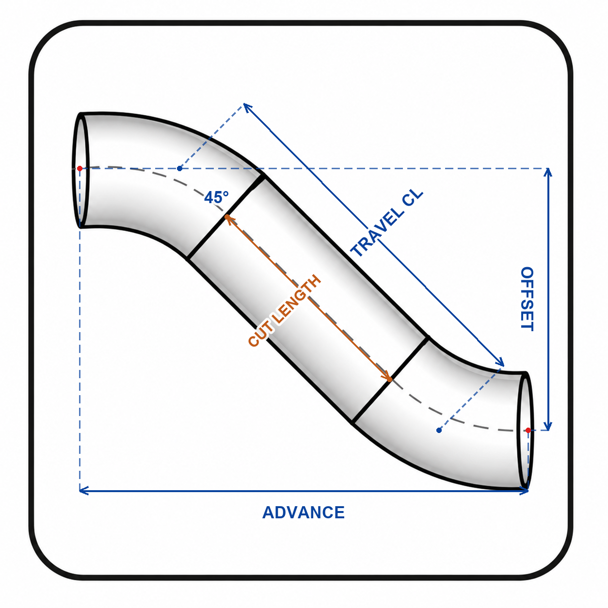
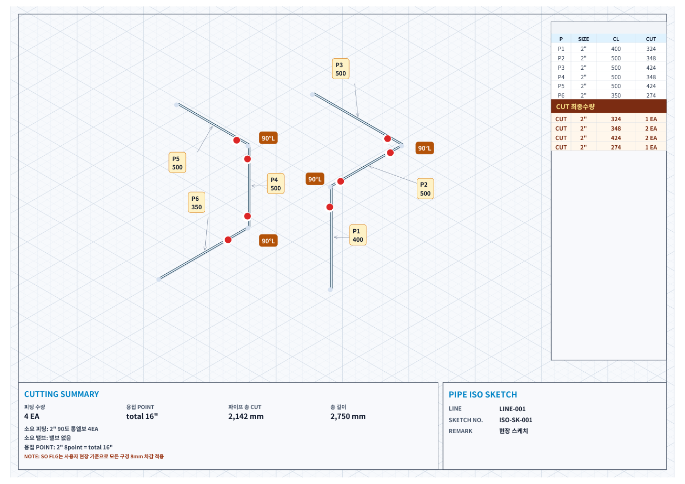
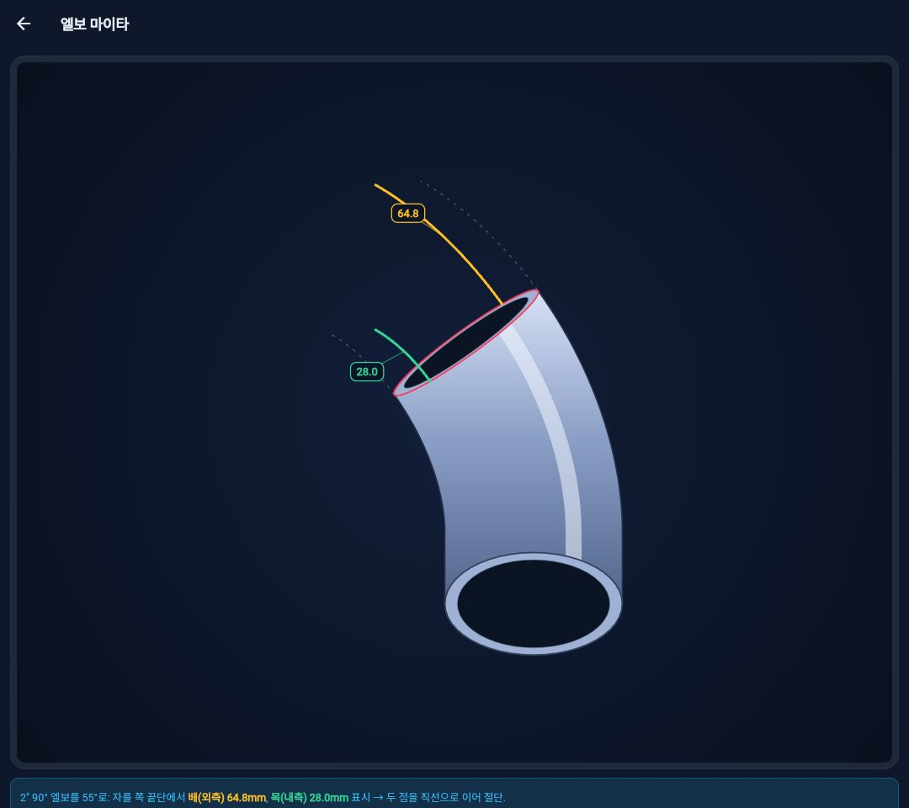

2D 옵셋 계산
45°·롤링·90°+45° 옵셋을 계산합니다. 보조선과 치수 도해로 OFFSET·ADVANCE·TRAVEL CL과 실제 절단 길이의 관계를 확인하세요.

배관 ISO 스케치와 구간별 CL/CUT, 피팅 수량, 용접 포인트를 정리하고 2D 옵셋·엘보 마이타를 계산하세요.

배관 ISO 스케치와 구간별 CL/CUT, 피팅 수량, 용접 포인트를 정리하고 2D 옵셋·엘보 마이타를 계산하세요.
45°·롤링·90°+45° 옵셋을 계산합니다. 보조선과 치수 도해로 OFFSET·ADVANCE·TRAVEL CL과 실제 절단 길이의 관계를 확인하세요.

엘보 절단 기준을 시각적으로 확인하고 배 쪽, 목 쪽 치수를 구분해 현장 절단 기준으로 활용합니다.

배관 ISO 스케치와 구간별 CL/CUT, 피팅 수량, 용접 포인트를 정리하고 2D 옵셋·엘보 마이타를 계산하세요.
엘보 마이타 주 5회 · 2D 옵셋 전체 형상 합산 주 5회 · PDF·DXF 내보내기 합산 주 5회. 세 한도는 각각 별도로 적용됩니다.
엘보 마이타 계산, 2D 옵셋 계산, PDF·DXF 내보내기를 횟수 제한 없이 이용하세요. 실제 가격과 결제 주기는 Google Play 결제 화면에서 확인할 수 있습니다.
매주 월요일 0시, 기기 현지 시간 기준으로 초기화됩니다. 남은 횟수는 이월되지 않습니다. 스케치 작성·편집과 피팅 치수표 열람은 횟수를 차감하지 않습니다. 무료 PDF에도 워터마크가 없습니다.
기존 영구 구매자는 추가 결제 없이 Pro를 계속 이용할 수 있습니다. 구매한 Google Play 계정으로 구매를 복원하세요. 신규 구독은 자동 갱신되며 Google Play에서 해지할 수 있고, 해지 후에도 결제한 기간까지 이용할 수 있습니다.
본 앱은 현장 작업자가 간단한 배관 ISO 스케치를 작성하고, 피팅별 치수와 커팅 길이를 빠르게 확인할 수 있도록 제작되었습니다. 실제 제작 및 시공 전에는 현장 도면, 프로젝트 사양서, 적용 코드, 자재 카탈로그, 감독자 검토 내용을 함께 확인해야 합니다.